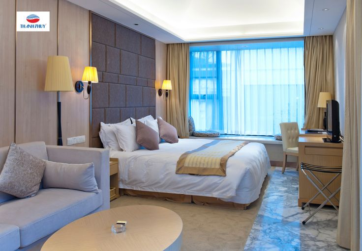
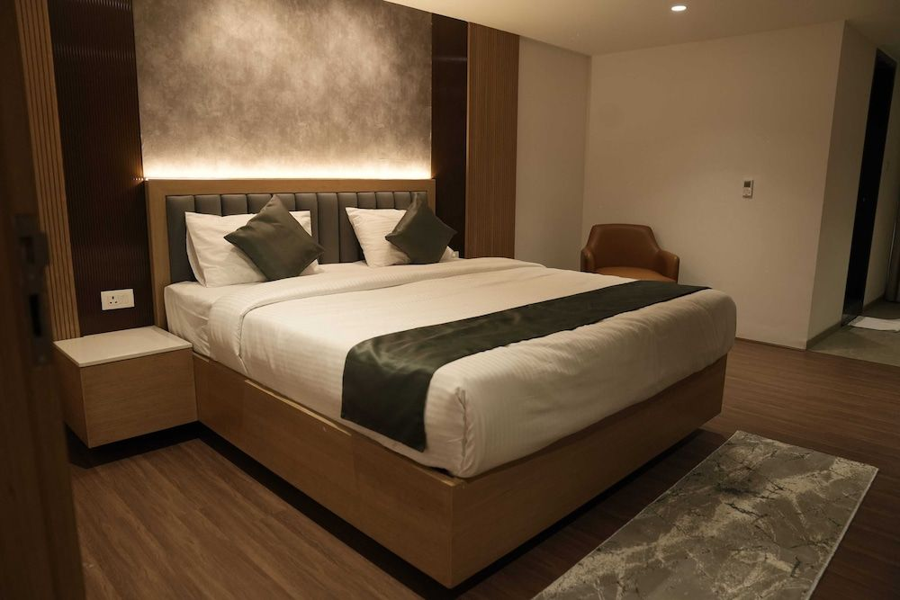
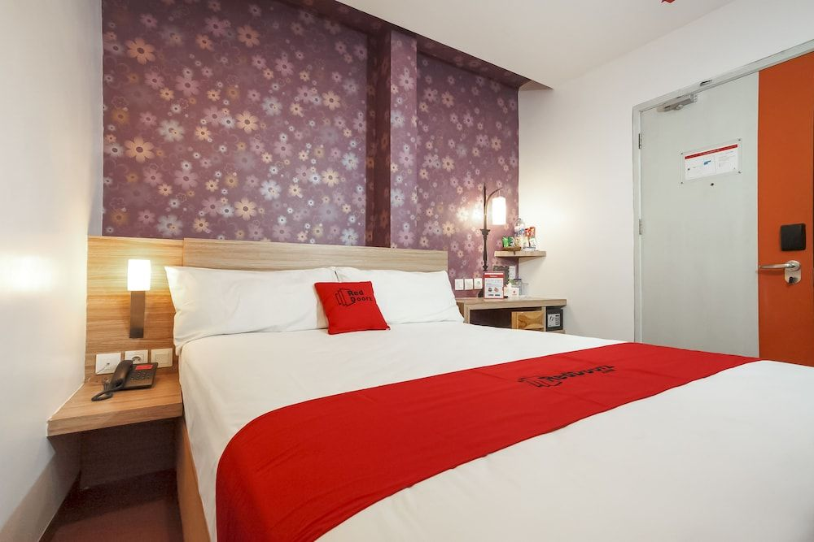
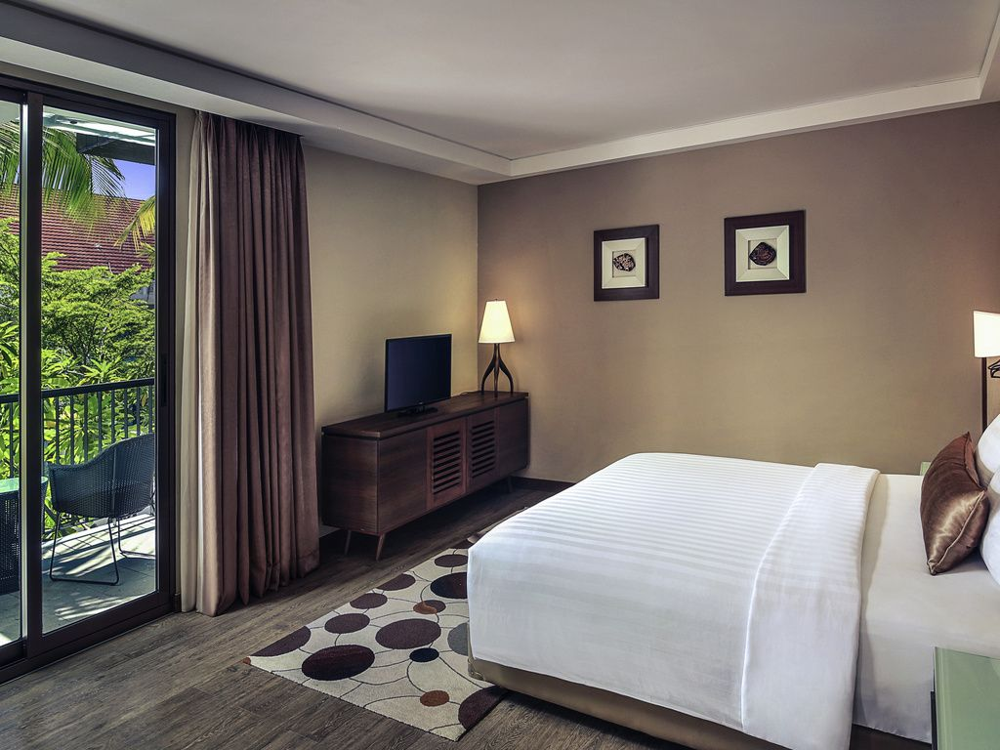
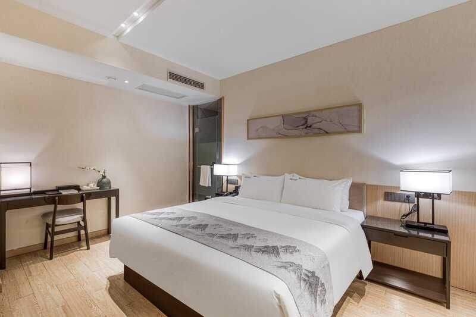
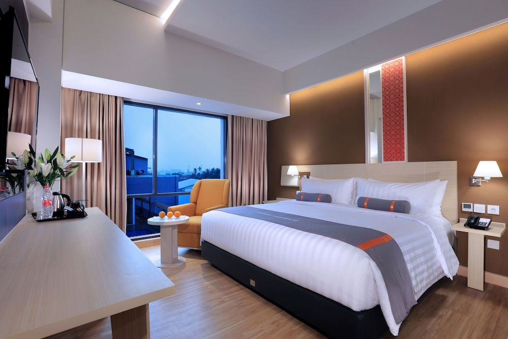

Buana Homestay
Harga: Mulai Rp 200.000 / malam (perkiraan dari listing homestay & desa wisata).
Fasilitas: WiFi (area), Parkir, Sarapan (opsional)
7 pilihan penginapan sekitar pintu masuk Baluran — homestay, guesthouse, dan wisma dalam area Bekol. (Harga & jarak: perkiraan dari sumber online; verifikasi bila akan dipublish.)

Harga: Mulai Rp 200.000 / malam (perkiraan dari listing homestay & desa wisata).
Fasilitas: WiFi (area), Parkir, Sarapan (opsional)

Harga: Mulai Rp 200.000 / malam (sumber desa wisata / jadesta).
Fasilitas: Sarapan, Kipas/AC tergantung unit, Parkir

Harga: Rp 150.000 – 350.000 / malam (perkiraan OTA / budget hotel).
Fasilitas: AC, Parkir, Kamar dasar

Harga historis: Rp 35.000 – 100.000 / orang atau ~Rp100.000/kamar (sumber panduan wisata).
Fasilitas: Sederhana (sharing mandi, listrik terbatas), ideal untuk pengalaman savana.

Harga historis: Rp 50.000 – 150.000 / kamar / orang (perkiraan dan catatan lokal).
Fasilitas: Sederhana, cocok untuk fotografi fauna & sunrise.

Harga historis: Rp 250.000 – 400.000 / unit (bungalow).
Fasilitas: Bungalow sederhana, kapasitas beberapa orang.

Harga: Estimasi mulai Rp 250.000 / malam (lihat situs resmi untuk paket & rate).
Fasilitas: Hot shower, penginapan bergaya ecotour, paket tur lokal.